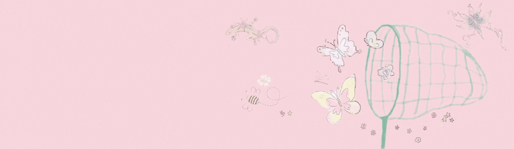

working on my portfolio!
added A new visitor card database for the meadow log
wip Giving the portfolio a fresh new colour scheme
wip Brainstorming ideas for my new portfolio for new projects, fresh details and a little meadow magic